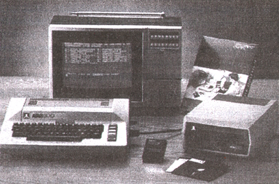
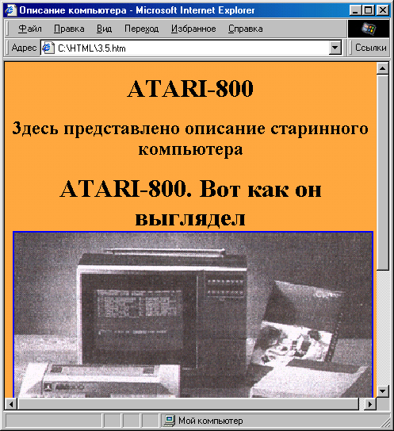

|
|
|
Изображение-карта
Теперь давайте рассмотрим более сложный пример. Представим себе, что надо сделать сайт, посвященный описанию старинного компьютера ATARI-800. Уже подготовлены файлы с описанием его монитора, самого компьютера и дисковода: monitor.html, computer.html и diskovod.html (мы для проверки работоспособности примера тоже создали такие файлы, но в них ничего нет, кроме заголовка). Наша задача: создать титульную страницу сайта и поместить на нее изображение компьютера (рис. 3.4).
При этом логично было бы сделать так, чтобы щелчок на изображении монитора переводил читателя на страничку с описанием монитора, щел чок на изображении дисковода — на страничку с описанием дисковода и щелчок на изображении самого компьютера — на страничку с его описанием. Можно, конечно, “разрезать” изображение на три и с каждого дать гиперссылку на соответствующий файл. Но при этом разрушится целостность композиции на фотографии компьютера. Что же делать?
Оказывается, есть возможность установить несколько гиперссылок с одного рисунка, не “разрезая” его! Такое изображение называется кар той графических ссылок (imagemap}. Создание карты графических ссылок — операция довольно кропотливая, но результат обычно довольно эффектен. Делается это так.
Вот, например, наш файл diskovod.html:
<HTML>
<НЕАD>
<ТIТLЕ>ДИСКОВОД</ТIТLЕ>
</НЕАD>
<ВODY>ОПИСАНИЕ ДИСКОВОДА</BODY>
</HTML>

Рис. 3.4. Изображение компьютера, из которого мы будем делать
графическую карту ссылок
1. Сначала рисунок внедряется на веб-страницу обычным образом, с помощью тега <IMG>:
<IMG SRC="Images/computer.gif" WIDTH="451" HEIGHT="310" BORDER="0" ALT="ATARI-800">
2. Затем необходимо установить в этом теге атрибут USEMAP=. Его значение должно содержать имя карты графических ссылок, с предвари тельным знаком #, Если карта еще не создана, как в нашем случае, то ей можно дать любое имя:
<IMG SRC="Images/computer.gif" WIDTH="451" HEIGHT="310" BORDER="0" ALT="ATARI-800" USEMAP="#compmap">
3. Теперь нужно создать собственно карту ссылок. Вообще говоря, эта карта может располагаться где угодно, хоть в другом файле — тогда в атрибуте USEMAP= нужно будет указать, кроме имени карты, имя этого файла, например: “mapfile.html#mymap”). В нашем случае давайте рас положим ее в конце того же файла.
4. Карта графических ссылок начинается с тега < МАР> и завершается зак рывающим тегом </МАР> . В теге <МАР> следует установить (обязательно!) единственный возможный атрибут NAME=. Его значением должно быть имя карты, на которое мы ссылались в теге <МАР> (с помощью атрибута USEMAP=). В данном случае это должно быть имя "compmap":
<МАР NAME="compmap">
5. Между тегами <МАР> и </МАР> должна находиться основная часть карты. Она состоит из нескольких тегов <AREA> , каждый из которых определяет активную область рисунка. (При щелчке мыши на “актив ных областях” может происходить перемещение по гиперссылке, а остальная часть изображения ничем не отличается от обычного рисунка.) В данном случае нам нужно определить три такие “активные области”: изображение монитора, компьютера и дисковода.
6. “Активные области” могут быть либо прямоугольной формы, либо круглой, либо многоугольной. Это определяется установкой значения атрибута SHAPE= в теге <AREA> (он употребляется без закрывающего тега). Если значение этого атрибута — "rect", область будет прямоугольной, если "circle" — круглой, а если "poly" — многоугольной.
7. Дальше начинается самое неприятное в составлении карты графических ссылок: нужно определить координаты каждой из активных областей и записать их как значения атрибута COORDS=.
Если “активная область” прямоугольная, то следует указать координаты левого верхнего ее угла и правого нижнего. Местоположение любой точки на рисунке может быть определено с помощью двух чисел — ее горизонтальной и вертикальной координат. Самая левая верхняя точка на рисунке имеет координаты “0,0”. Чем больше горизонтальная координата, тем правее расположена точка, и, соответственно, чем больше вертикальная координата, тем точка ниже. Например, если рисунок имеет размер 400х300 точек и нам нужно определить прямо угольнуюактивную область, занимающую его левый верхний угол и имеющую половину ширины и высоты рисунка, мы должны будем написать следующее:
<AREA SHAPE="rect" COORDS="0,0,200,150">
В этой записи атрибут COORDS= определяет прямоугольник с помощью двух точек: одна из них имеет координаты “0,0”, то есть левый верх ний угол, а другая — “ 200,150”, то есть это центральная точка рисунка размером 400х300.
Если “активная область” круглая, то задача немного упрощается: нужно определить координаты только одной точки — центра окружности, а также указать ее радиус, например:
<AREA SHAPE="circle" COORDS="200,150, 40">
Такая запись определяет круглую “активную область”, расположенную в центре нашего гипотетического рисунка размером 400х300 (координаты центральной точки— “200,150”). Окружность имеет радиус 40 точек.
И, наконец, самый сложный и наиболее часто встречающийся случай — многоугольная “активная область”. Здесь нужно последовательно
указать координаты всех углов многоугольника. Поскольку таких углов может быть очень много, то и значение атрибута COORDS= при обретает угрожающие размеры... Рассмотрим простой пример. Если на нашем рисунке размером 400х300 мы хотим определить область в форме равнобедренного треугольника, основание которого проходит ровно посередине рисунка, занимая всю его ширину, а вершина нахо дится посередине верхней границы рисунка, то это можно сделать так:
<AREA SHAPE="poly" COORDS="0,150,400,150,200,0">
Как видите, шесть координат определяют три точки — три угла нашего треугольника. В данном случае их последовательность не очень важна (можно было написать, например, "400,150,0,150,200,0"), но когда коли чество углов больше, становится важным порядок соединения точек. Например, записи
<AREA SHAPE="poly" COORDS="0,0,200,0,200,150,100,75,0,150">
И
<AREA SHAPE="poly" COORDS="0,0,200,0,100,75,200,150,0,150">
дадут разные результаты. В первом с случае это прямоугольник с вырезанным треугольником снизу, а во втором случае вырезанный треугольник находится справа.
Отпугивающим моментом в этой технологии является то, что приходится каким-то образом выяснять координаты каждой нужной точки. На реальном рисунке это невозможно сделать “на глаз”, и приходится, к примеру, выяснять все координаты в каком-либо графическом редакторе, а уже потом переносить их в HTML-документ. К счастью, в послед них версиях некоторых HTML-редакторов (например, Allaire Homesite) имеются встроенные средства для установки координат на картах графических ссылок.
8. Однако атрибуты SHAPE= и COORDS= — это еще не все. В теге <AREA> необходимо установить еще самое главное — атрибут HREF=, определяющий гиперссылку, то есть куда же должен попасть пользователь при щелчке мышью на этой “активной области”. Здесь никаких сложностей нет — атрибут HREF= тега <AREA> ведет себя так же, как если бы он был в обычном теге <А> .
9. Кроме того, бывает полезно определить также атрибут ALT=. Его значе ние может содержать поясняющий текст, который будет “всплывать” при наведении мыши на “активную область”.
Итак, теперь мы можем попытаться обвести “активные области” нашего изображения компьютера (см. рис. 3.4). Естественно, что все они должны быть многоугольными, так как ни один из трех объектов не “укладывается” в прямоугольник или круг. Посмотрим, что получится в результате.
<!DOCTYPE HTML PUBLIC "-//W3C//DTD HTML 4.0 TRANSITIONAL//EN">
<HTML>
<HEAD>
<TITLE>Описание компьютера</TITLE>
</HEAD>
<BODY BGCOLOR="#FFA940" TEXT="#1A1A1A" LINK="#OOOOAO" VLINK="#OOOOAO" ALINK="#OOOOAO">
<DIV ALIGN-"center"><H1>ATARI-800</Hl></DIV>
<DIV ALIGN="center"><BIG>3necь представлено описание старинного компьютера ATARI-800. Вот как он выглядел :</BIGX/DIV>
<DIV ALIGN="center"><IMG SRC="Images/computer.gif" WIDTH="451" HEIGHT="310" BORDER="0" ALT="ATARI-800" USEMAP="#compmap"></DIV>
<DIV ALIGN="center">Для получения подробной информации о каждом узле щелкните на его изображении.</DIV>
</BODY> <МАР NAME="compmap">
<AREA ALT="МОHИTOР" SHAPE="poly"
COORDS="95,41,289,40,289,180,212,180,211,167,86,168,86,54" HREF="monitor.html">
<AREA ALT="Koмпьютep ATARI-800" SHAPE="poly" COORDS="7,253,57,255,62,265,156,265,158,259,205,259,213,247,210,178, 208,169,30,168,6,245" HREF="computer.html">
<AREA ALT="Диcкoвoд" SHAPE="poly" COORDS="293,197,345,154,438,168,441,196,437,224,400,265,294, 252,292,226" HREF="diskovod.html">
</МАР>
Результат этих трудов представлен на рис. 3.5. Как видите, на первый взгляд рисунок на страничке вполне обычный — наличие “активных областей” ничем не выдается. Поэтому необходима поясняющая подпись под рисунком.
Если поводить мышью над рисунком, то можно заметить, что над “актив ными областями” указатель мыши меняет свой вид, а если приостановить мышь над “активной областью” — появится соответствующая всплыва ющая надпись. И еще интересный момент: в большинстве броузеров можно воочию увидеть границы активных областей. Для этого надо нажать кнопку мыши на “активной области”, и, не отпуская ее, увести мышь за пределы области, и там отпустить кнопку. Тогда граница соответствующей “ актив ной области” останется выделенной.

Рис. 3.5. Страничка с графической картой ссылок
|
|
|